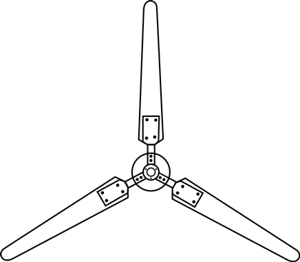

Propeller.js
Wind energy facts
- Wind mills have been in use since 2000 B.C. and were first developed in China and Persia
- There’s enough on-shore wind in America to power the country 10 times over
- Google has invested $5 billion in a new underwater transmission line to connect offshore wind
farms in the Atlantic Ocean with 1.9 million households on the East Coast.
- JavaScript library to rotate elements by mouse or touch gestures.
- Easy-to-use as jQuery
plugin:
$(nodeOrSelector).propeller(options);
or zero-dependancy library
new Propeller(nodeOrSelector,
options)
- Propeller uses requestAnimationFrame and GPU compositing for better performance. It is
also compatible with touch devices.